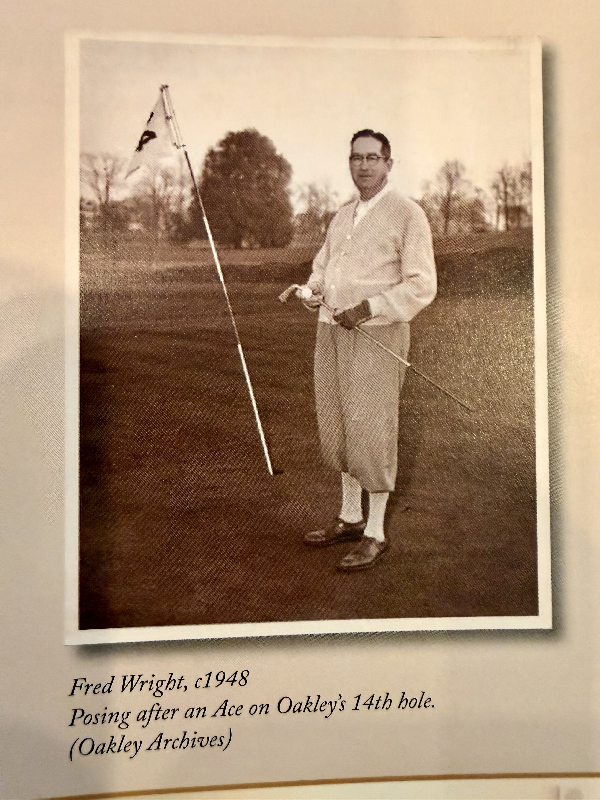
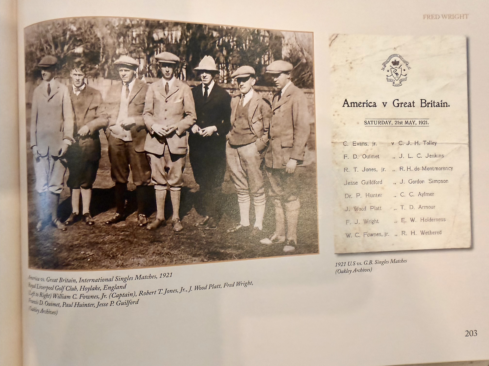
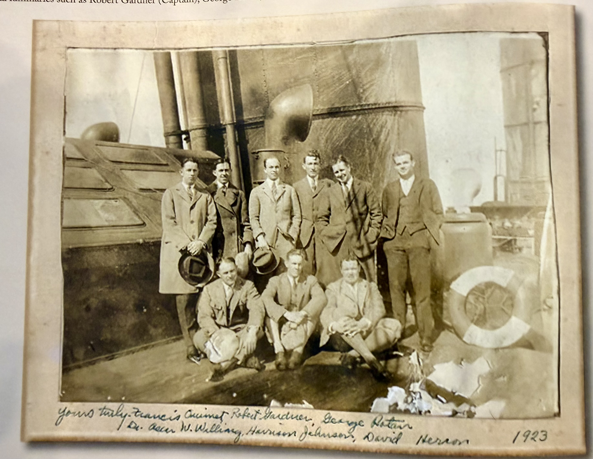
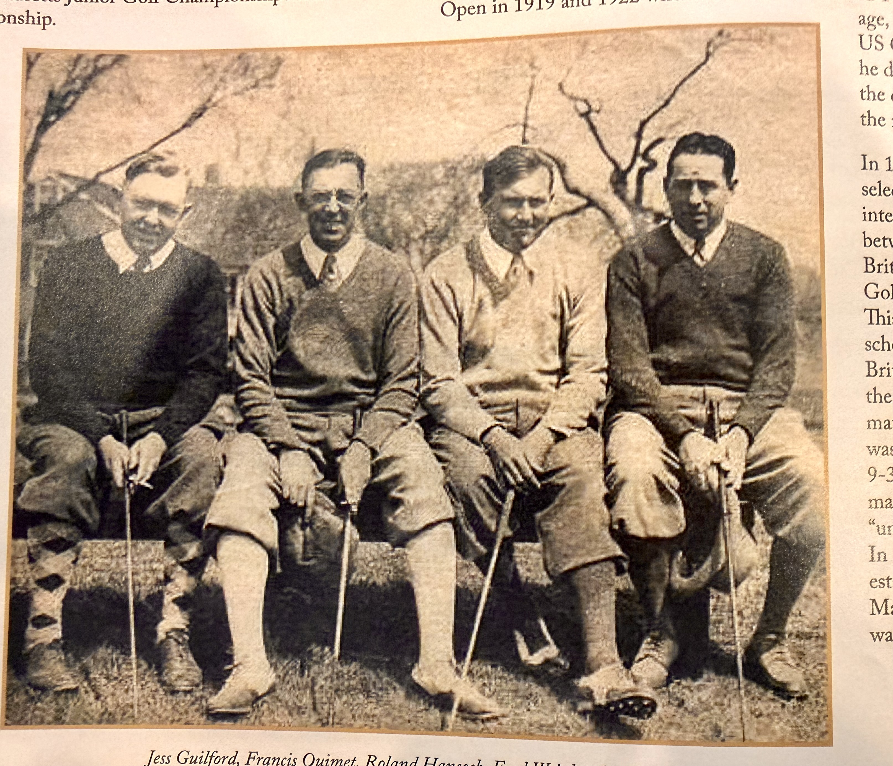
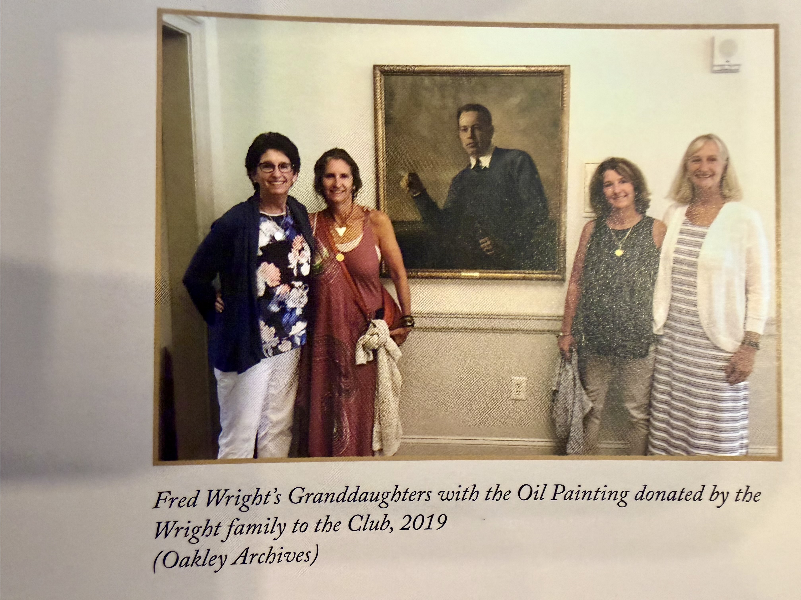

A spring afternoon at Oakley, the ball in the cup at the par-three 14th. Wright posed with the flagstick the way a man poses for a photograph he expects his grandchildren to see.

At Hoylake, the informal match that became the Walker Cup. Wright on the United States team with Bobby Jones, Ouimet, and Guilford.

Ouimet, Gardner, Rotan, Willing, Johnson, and Herron — bound for the second Walker Cup match.

Wright (right) with Jess Guilford, Francis Ouimet, and Roland Hancock — a Massachusetts foursome of national reputation.

Wright’s four granddaughters with the oil portrait donated by the family to the Club — now hanging in the room where pairings are read.